BREAKING: Nvidia $NVDA CEO Jensen Huang resigns.
In WWII, the Office of Strategic Services was forged on a defining American truth: when the Nation is tested, Americans rise, endure, and prevail.
The men and women of the OSS went into the night with no promise of safety, no guarantee of return, and no expectation of praise. They went because their country called. They went because the cause was just. They went because Americans do not turn from the hard road when duty points the way.
That legacy lives today in America’s Special Operations Forces. They carry the Nation’s hardest missions into the world’s most dangerous places, often without recognition and always with extraordinary responsibility.
Today, I am pleased to announce that Secretary Hegseth has signed a pivotal memorandum enabling the ASW(SO/LIC) to fully exercise its statutory authority in line with Congress’s intent by elevating the office to Under Secretary of War equivalence and restoring its name to the Office of Strategic Services (OSS).
This action is a pledge that those sent into the hardest places, entrusted with the gravest responsibilities, and called upon when all else has failed will have a voice equal to the burden placed upon their shoulders. They will be given the resources, authority, and support required to prepare, to endure, and to prevail.
In honoring our Special Operators, we honor the courage, sacrifice, and unbreakable American spirit that has carried this Nation through its hardest hours and will carry us forward still.
Read the full release here:
.@USNavy EOD technicians train for explosive hazard detection during a minestrike drill in California.
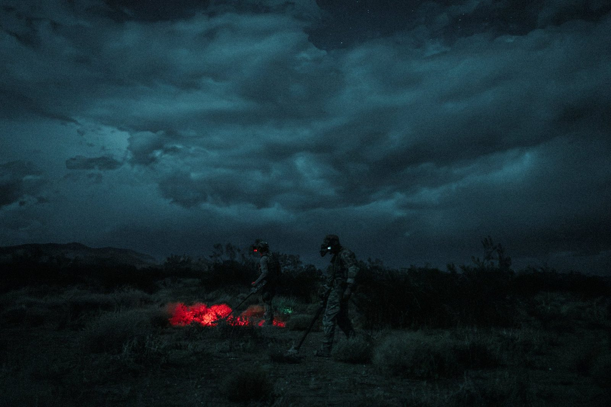
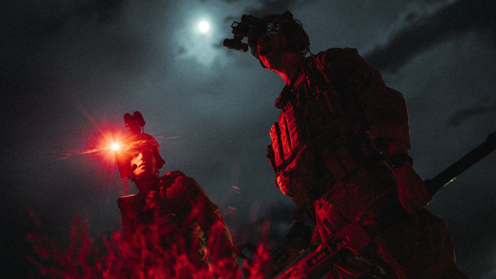
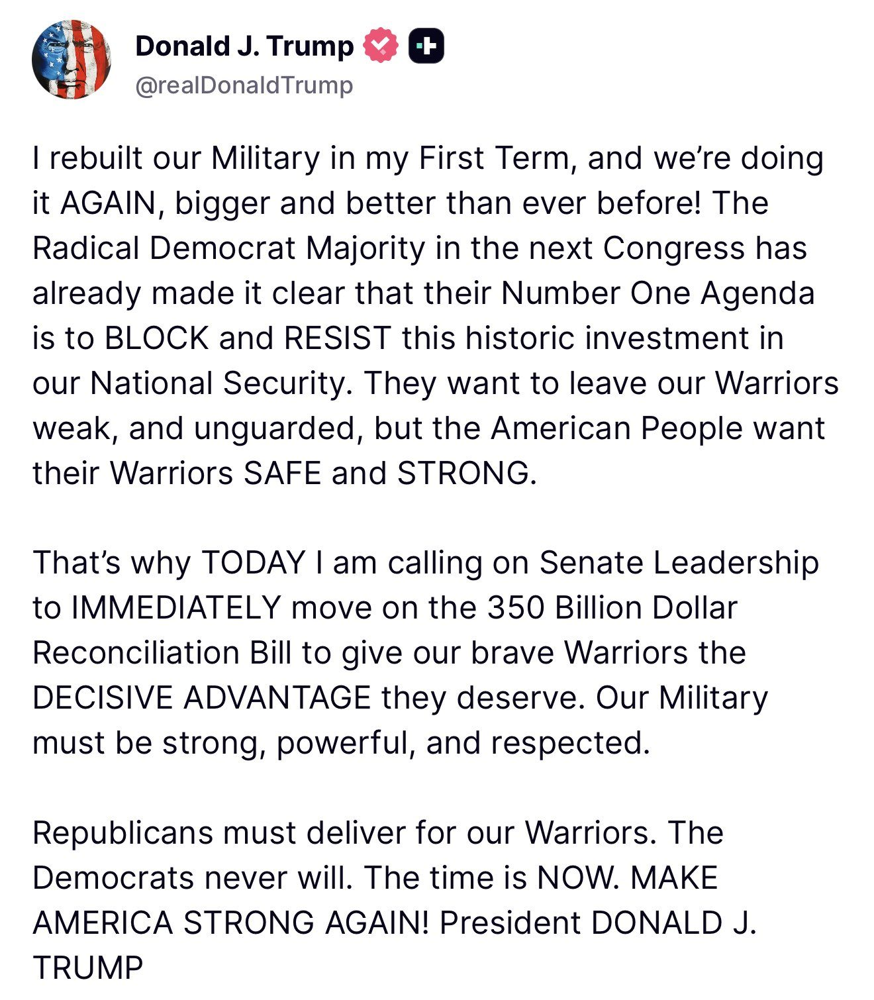
Secretary of War Pete Hegseth Elevates Special Operations Leadership to Revitalize the Legacy of the Office of Strategic Services
We are advancing our multi-chain strategy with plans to connect the DTCC Tokenization Service with @solana, expanding network choice for market participants.
DTC-tokenized assets are expected to be available on Solana in the second half of 2027. ➡️ https://www.dtcc.com/press-releases/2026/dtcc-tokenization-service-to-connect-with-solana?utm_source=x&utm_medium=organic_social
Today, we’re launching a $100M 24/7 liquidity facility for @BlackRock's BUIDL with @ethena.
Supported by Ethena and operated through Securitize, it enables eligible investors to exchange between BUIDL and supported stablecoins, including USDC, outside traditional market hours.
The case for institutions to tokenize is building.
From new sources of capital to AI-driven adoption, to competitive pressure, explore what’s driving this shift in a new research series co-authored with @animocabrands.
JUST IN: Visa expands crypto stablecoin settlement network through partnership with Western Union and Anchorage.
BREAKING: A caravan of nearly 2,000 people reportedly from Central and South America is heading toward the U.S. southern border following Democrats’ midterm landslide. President Trump is threatening to double tariffs on Mexico unless officials stop the group from reaching the border, saying the migrants will not be allowed into the United States.
There were only 9.1 million Hispanics in the US when they were first counted separately by the 1970 census
Fifty years of Hart-Celler later, and it was measured at 62.1 million in 2020
That's not natural increase, that's mass migration
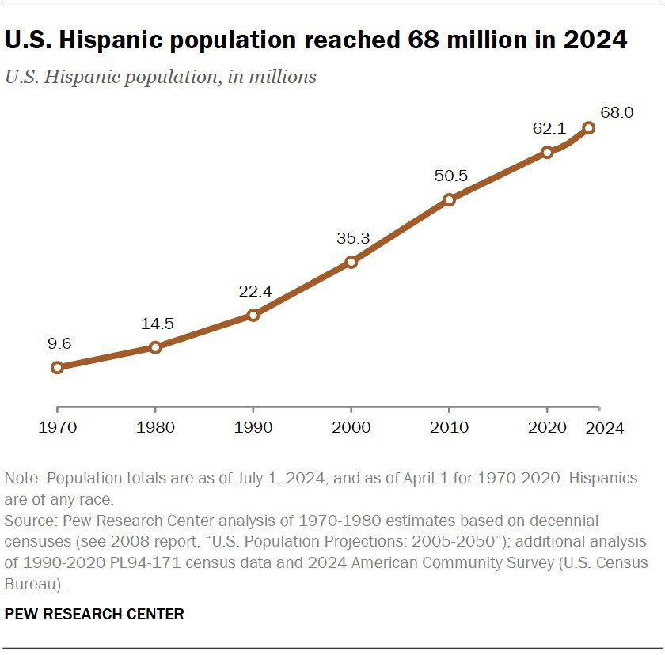
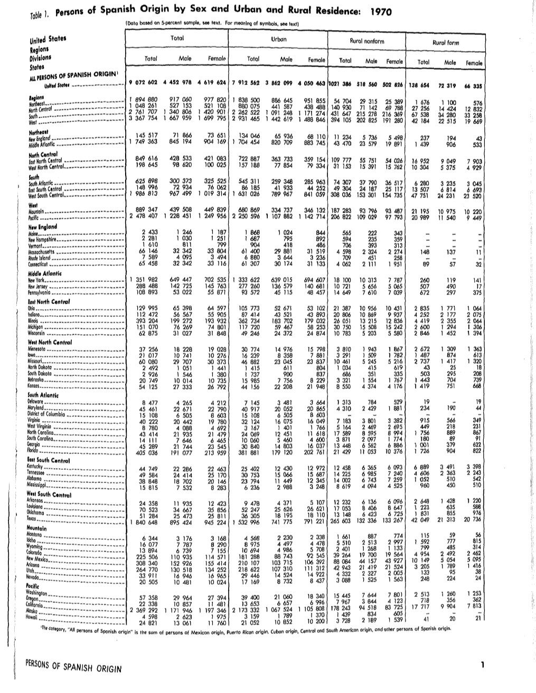
.@ICEgov carried out the most deportations and arrests of any fiscal year in history in Fiscal Year 2026. 💪🏻🇺🇸
Residents of federally funded public housing will be required to show proof of U.S. citizenship or eligible immigration status under a new rule published Thursday.
#BREAKING: New ICE detention facility opens in Minnesota after $496M federal purchase.
Today, as part of Operation Endgame, the FBI and our partners announced the disruption of the malware and botnet known as Gootloader. Since 2018, Gootloader malware infected more than 25,000 computers worldwide and was used in ransomware attacks against at least 44 U.S.-based victims, resulting in millions of dollars in losses.
As part of the coordinated international operation, @FBIDenver and partners removed the Gootloader malware from over 100 computer servers and seized the U.S. domain names used by criminals to deliver and control the malware. Private-sector partner The Shadowserver Foundation assisted with identifying infections, victim notification, and remediation.
🌪️ Operation TorNado: the LARGEST TAKEDOWN in the Joint Criminal Opioid and Darknet Enforcement's (JCODE) HISTORY of Dark Web narcotics vendors who sold to TENS OF THOUSANDS of U.S. residents
Results: 🔴 354 ARRESTS 🔴 5.7 METRIC TONS DRUGS SEIZED 🔴 209 FIREARMS SEIZED 🔴 $234 MILLION CRYPTOCURRENCIES & CASH SEIZED
Read more about this International law enforcement operation here:
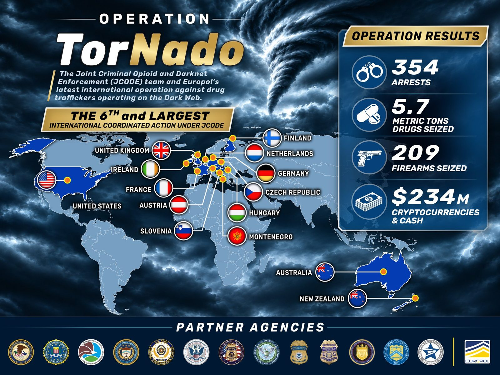
BREAKING: Armed officers are positioned on rooftops and balconies as the gunman reportedly barricades himself inside an apartment above the VIDA Fitness gym in Washington, D.C.
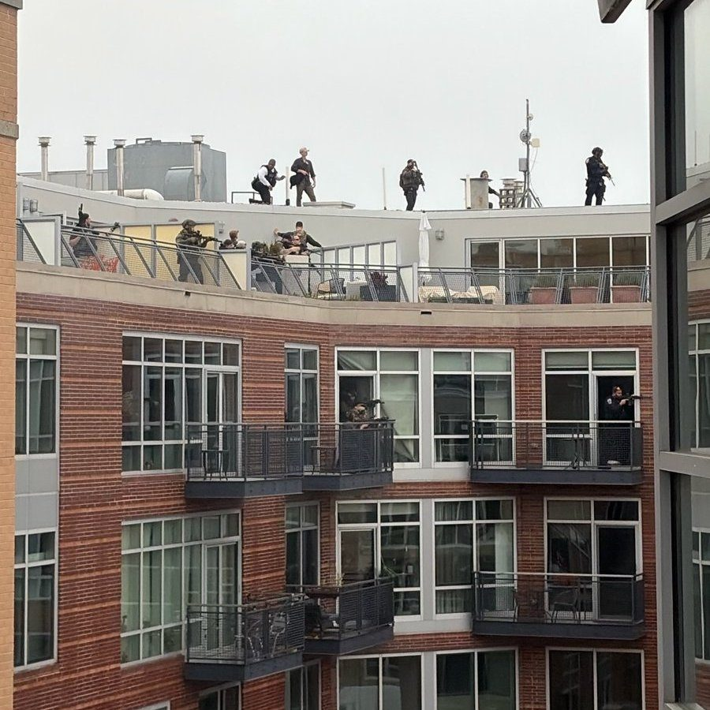
JUST IN: 🇺🇸🏳️⚧️ Illegal immigrant who attempted to hijack a United Airlines plane avoided deportation by claiming to be transgender.
Matt Lambert posted twisted 'manifesto' just minutes before deadly DC shooting in trendy Logan Circle
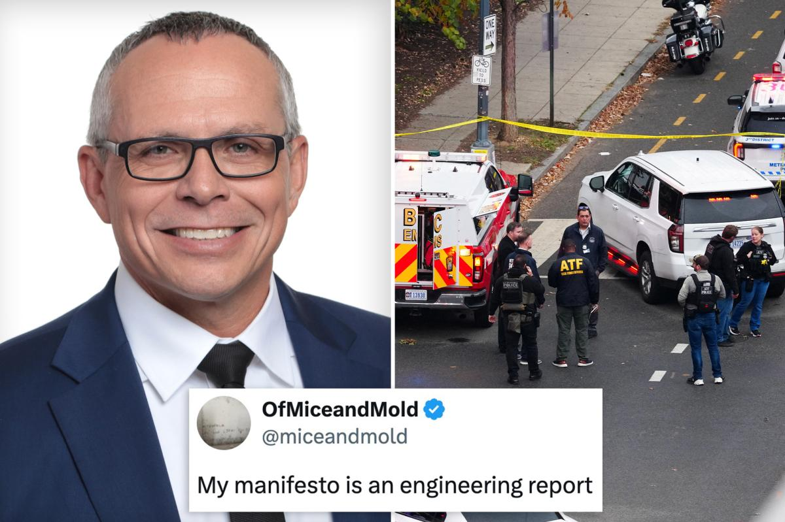
BREAKING: Four people have been shot in a trendy Washington, D.C., neighborhood within walking distance from the White House, police say.
BREAKING: Suspected shooter in the DC gym shooting is dead — NBC
For too long, Washington treated America’s industrial decline as inevitable. President Trump recognized that it was the result of policy choices—and therefore reversible. The sector’s renewed momentum following @POTUS’s trade policy reset and the enactment of his historic tax cuts demonstrates that the right policies can reverse decades of industrial decline.
American manufacturing is gaining momentum on every front.
The sector has expanded for ten consecutive months and added 101,000 jobs so far this year. Output rose again in September, while job openings climbed to 584,000—the highest non-Covid-era reading on record.
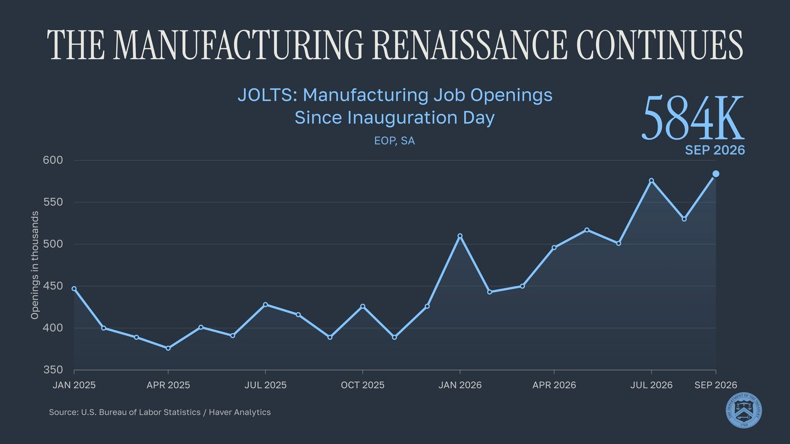
SpaceX has committed $220 million to expand water and wastewater infrastructure for Brownsville and Cameron County -- the largest private contribution to Brownsville’s water future in the city’s history.
This investment addresses one of the region’s most urgent challenges: securing a reliable, sustainable supply of drinking water for generations to come
JUST IN: Developer abandons $10B Michigan data center project after residents reject the proposal, despite promises of $54 million in annual tax revenue & a $20 million community investment fund.
🚨 NEW: The Bank for International Settlements (BIS) just released a global liquidity stress-testing tool covering nearly 13,000 banks in 100+ economies, about $170 trillion in assets.
The paper warns digital bank runs can unfold in hours, challenging Basel III liquidity rules.
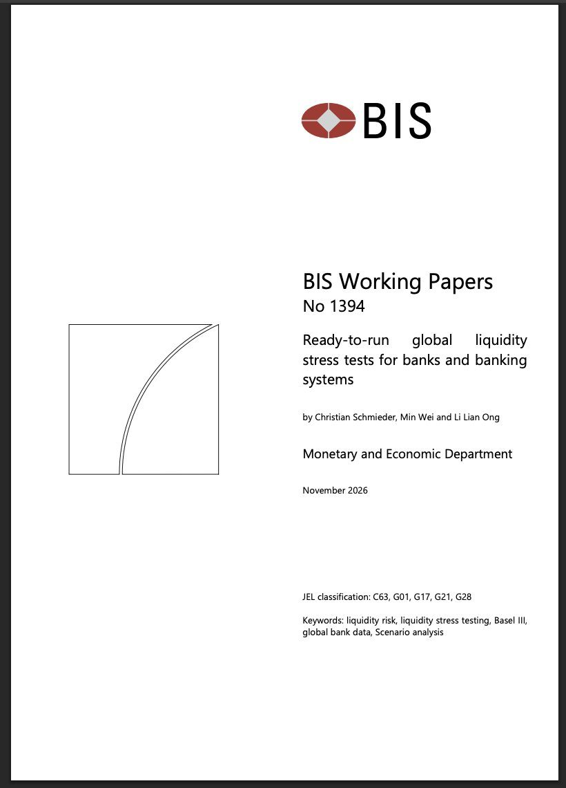
Jared Kushner:
If Europe could identify one person to speak on their behalf, that would be a bigger achievement than getting the Russians to include them in the negotiations.
Jared Kushner arrives in Moscow with Steve Witkoff for a meeting with President Putin. 🇷🇺🤝🇺🇸
▶ Watch on XFDNY units continue to operate Thursday morning at the site of a building collapse on Flatbush Avenue in Brooklyn:
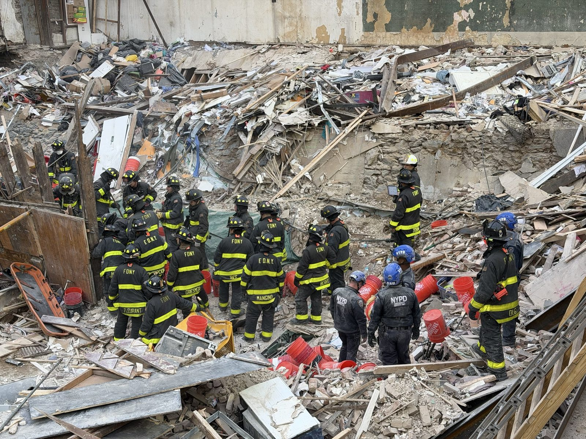
BREAKING: 8 people are dead and more than dozen injured after massive building collapse in Brooklyn, New York City
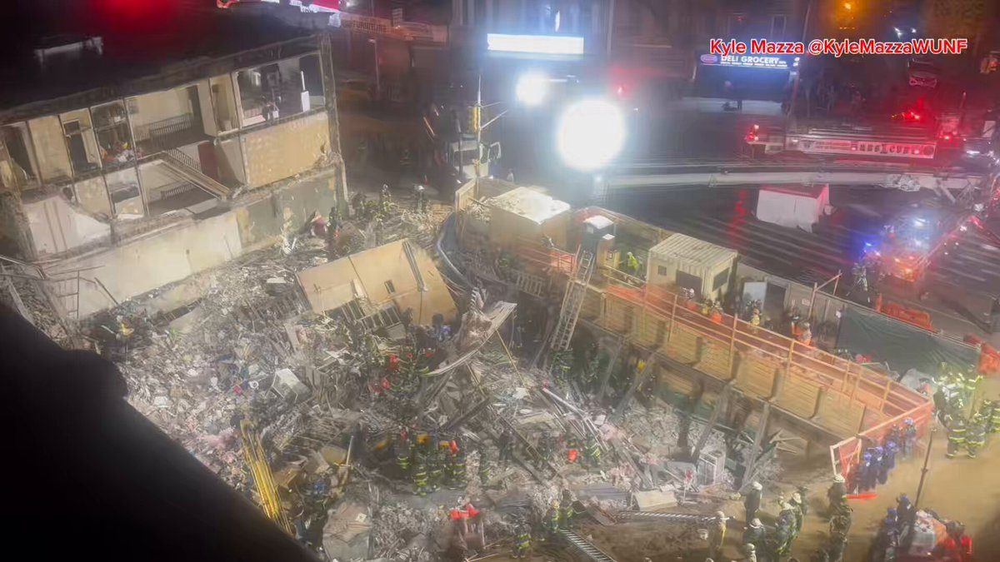
▶ Watch on XMajor fallout from the April incident of CIA involvement in a state-level drug lab raid in Chihuahua
Mexico is so furious that the federal government was cut out of the loop, the state AG has now been arrested and accused of treason https://www.reuters.com/world/americas/ex-chihuahua-attorney-general-accused-treason-allowing-us-participation-drug-2026-10-18/
Mexico’s government is providing police escorts to the migrant caravan headed to the U.S. and is allowing them to sleep in municipal auditoriums as the growing group makes their way towards Mexico City and eventually the U.S. border.
A federal grand jury has indicted a Fort Myers missionary on charges alleging child exploitation offenses in Haiti. According to court documents, the defendant used his position and access to vulnerable children to commit and attempt to commit serious crimes spanning multiple years. Our office will continue working with law enforcement partners to identify offenders, protect children, and ensure that those who exploit minors are brought to justice, no matter where they commit their crimes.
Florida Missionary Indicted for Child Exploitation Crimes in Haiti
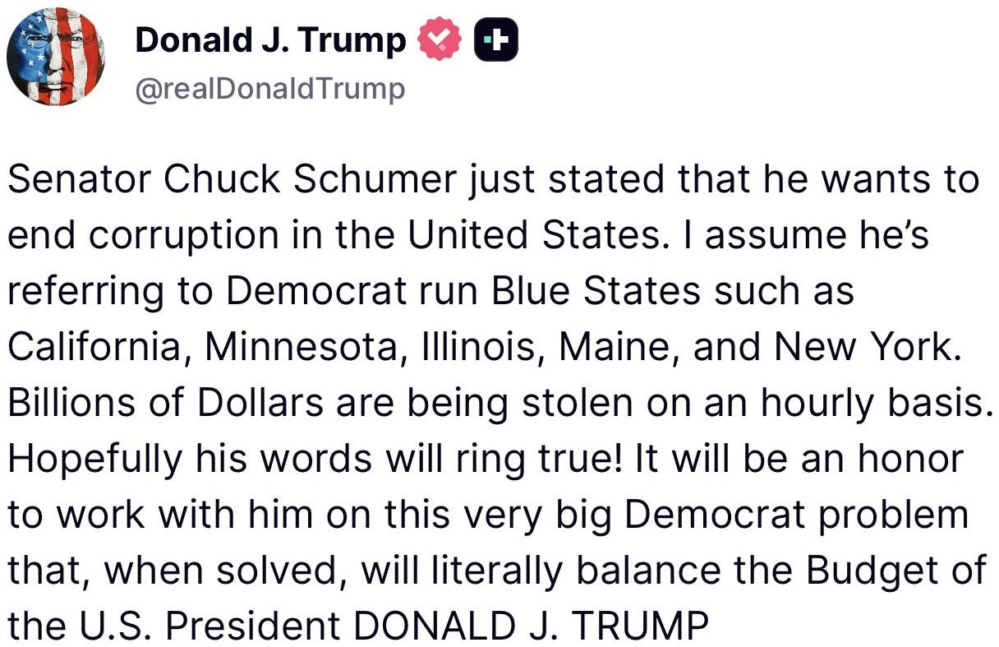
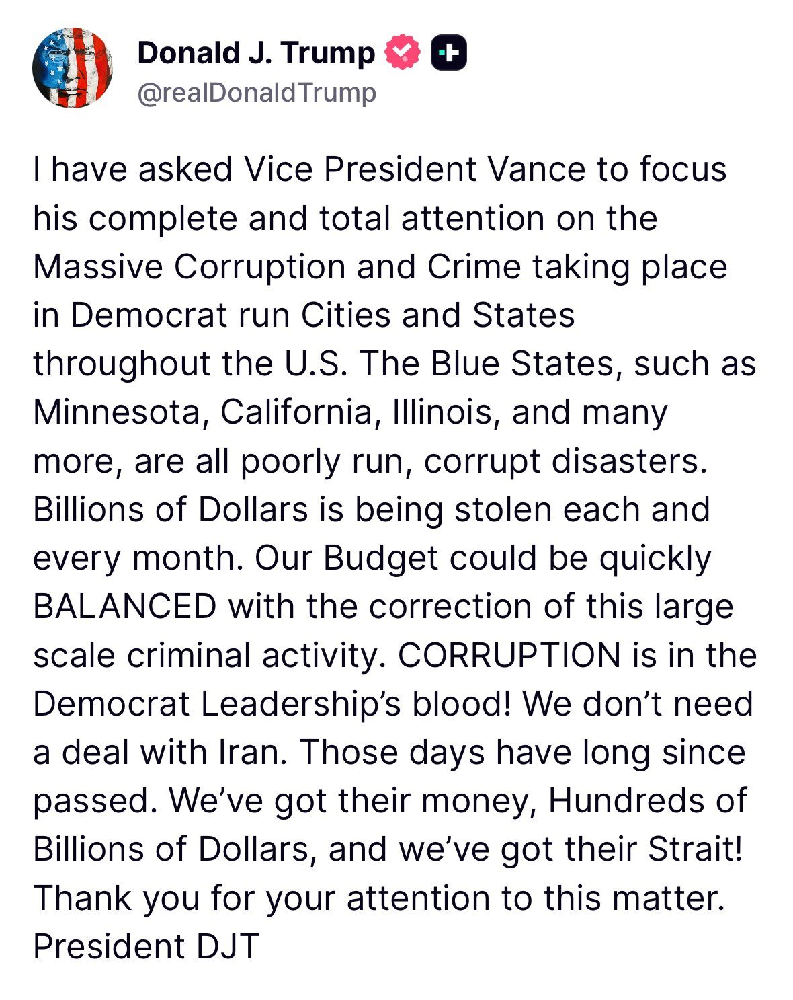
BREAKING: President Trump and Israeli Prime Minister Benjamin Netanyahu got into a “shouting match from hell” over the weekend over their different stances on the future of the Iran war, per NYP
A phone call between the two leaders saw Netanyahu repeatedly push for the war to restart, but Trump stuck to the diplomatic angle to allow the current peace talks with Iran to progress, Ynet and the Yedioth Ahronoth newspaper reported.
BREAKING: 🇮🇷 45 minutes ago, a large-scale missile attack was conducted from the Bandar Abbas area towards the Strait of Hormuz.
Over 10 missiles were launched.
JUST IN: 🇺🇸🇮🇷 President Trump says Saudi Arabia, Qatar, Kuwait, UAE, and Bahrain have asked the US to maintain the current situation with Iran for now.
As one people, we say to every American veteran: we will NEVER forget your sacrifice, take your oath for granted, forsake your values, let our flag fall, or let our nation fail.
🇺🇸📸 Veterans Day 2026 at Arlington National Cemetery